누굴까기위한 글이 아닌 단순 정보글이니 지우기전에 제발 읽고 판단해주셈...
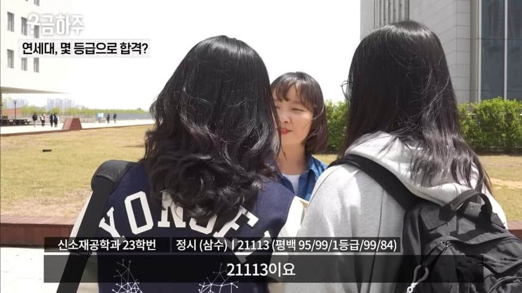
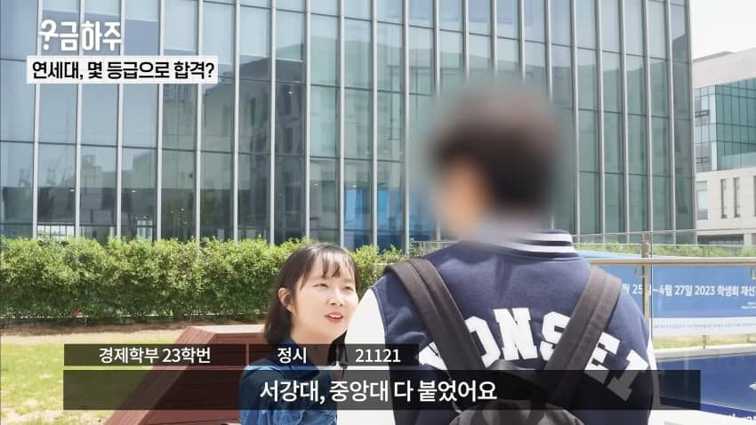
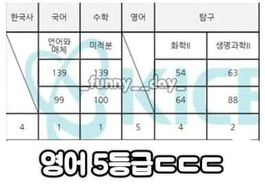
잊을만하면 핫해지는 학력저하 떡밥
보통 서연고 합격생들의 2,3등급 섞인 성적표가 인터넷에서 화제 되며 우리땐 2하나라도 뜨면 서성한도 빡셌는데 ㄷㄷ 등으로 돌아가는 단골 떡밥이다
그러나 한가지 의문이 있다 수험생 인구가 아무리 줄었다한듯 07년생 기준 49만명이고 메디컬+설카포연고 정원을 다합쳐도 2만명이 조금안된다 즉, 아직까지도 연고대는 상위4%수준의 대학이란건데 어떻게 2,3등급이 가득한 성적표로 들어갈수있을까?
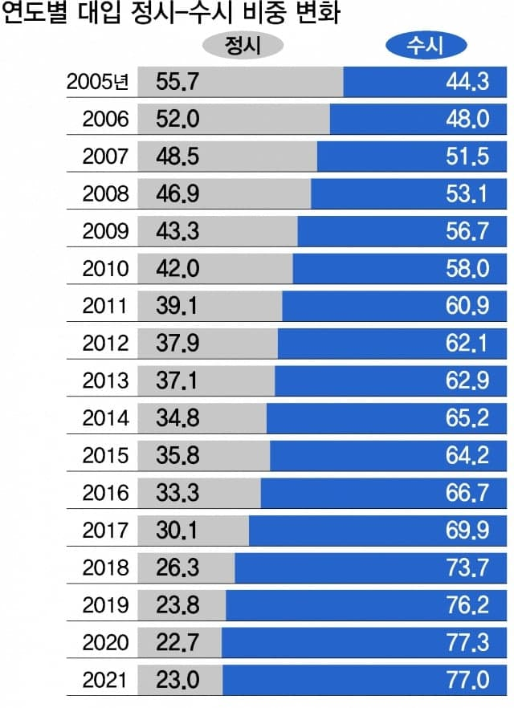
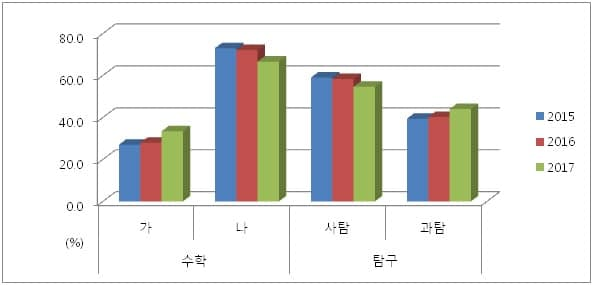
우선 '올1등급도 서성한 힘들었다', '연고대는 상위1%였다' 등등 악명높았던 90년대생의 입시부터 살펴보자
90년대생의 입시를 한문장으로 표현하면 '수시/문과 전성시대'이다 10년대 초반부터 수시비율이 60%를 넘기 시작하였고 후반기엔 정시비율이 20%초반대까지 떨어졌다 또한, 문과 수학 응시자가 전체의 2/3수준으로 대부분을 차지했다
바로 여기서 악명높은 90년대생 입시괴담이 탄생한다 대부분의 수험생이 수시로 대학을 진학하고, 또한 대부분의 수험생이 문과 수학을 응시한다 즉, 절대다수의 수험생이 정시성적에 대한 감이 없고, 그나마의 정시생들도 대다수가 문과입시 기준으로 생각하게 되었다는것이다
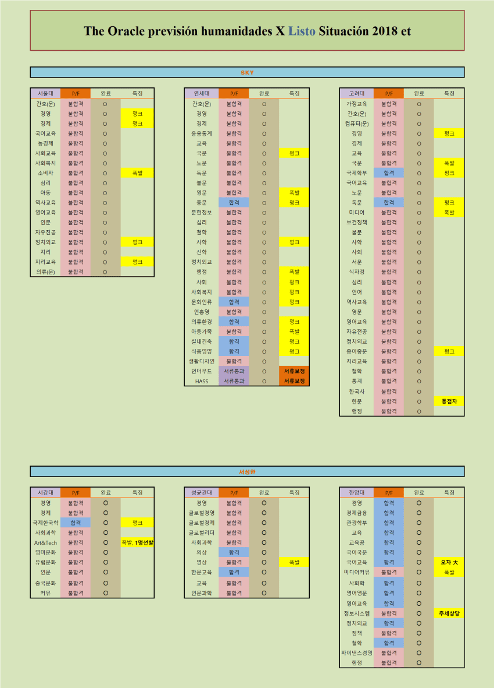
문과기준 등급만보면 과거 입시가 상당히 빡셌던건 맞다 18년도 수능에서 전과목이 1등급 커트라인이라면 서강대 성균관대 대부분의 학과에 불합격한다
다만, 이는 '상대적으로' 문과에 공부를 못하는 학생들이 많이 진학해 실제 실력보다 백분위가 높게 나오기 때문이다
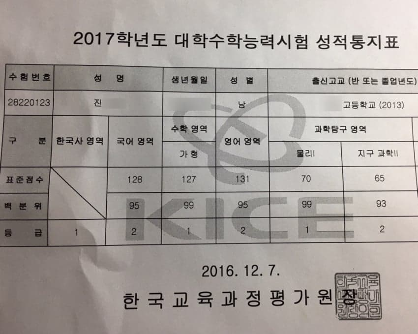
17학번 서울대 조경학과& 연세대 수학과 동시 합격성적표 21212
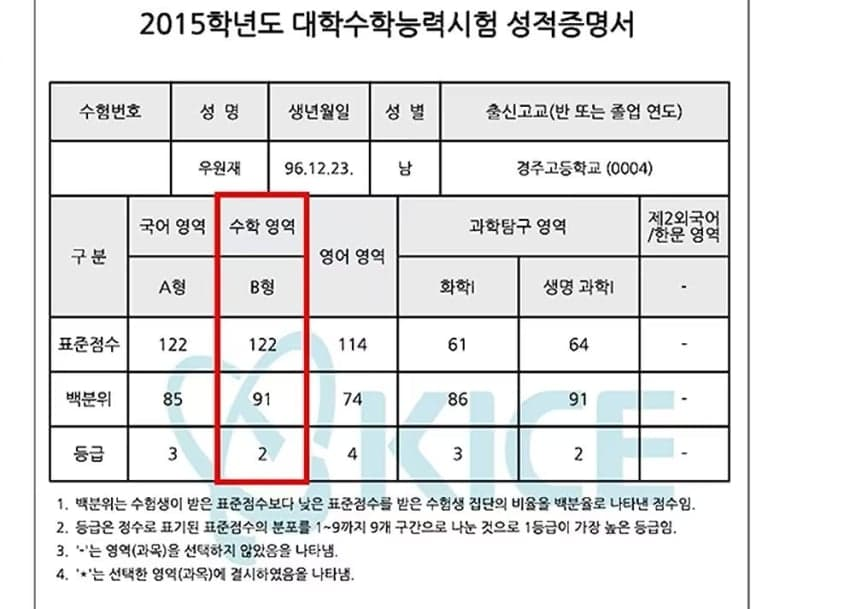
15학번 홍대토목공학과 합격성적표(우원재) 32432
당장 옛날에도 이과는 2등급이 섞인 성적표로 잘만 스카이갔고 1등급은 커녕 2등급도 몇없는 성적표로 잘만 인서울했다
성적따긴 쉽지만 촘촘한 입시 vs 성적따긴 어렵지만 느슨한 입시인셈
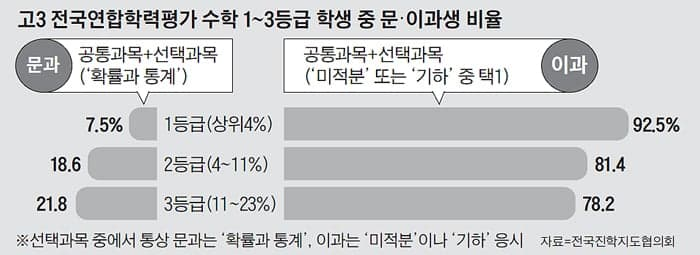
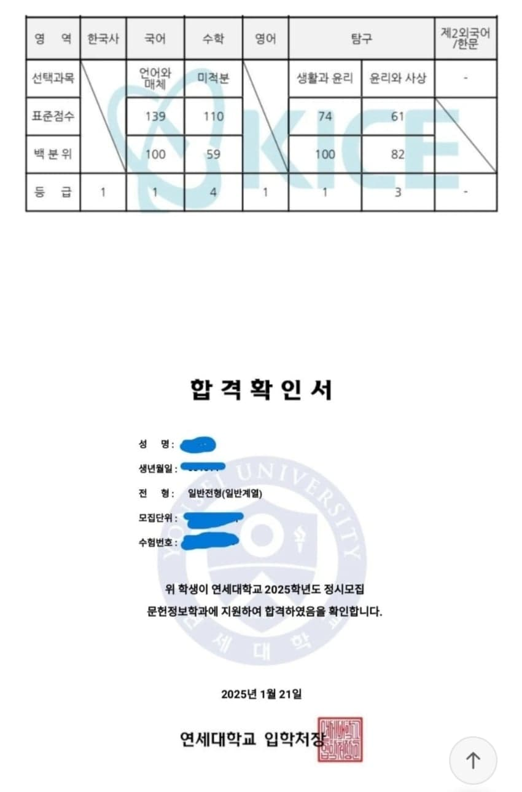
이후 수학이 통합되며 문과생들이 박살나버렸고 백분위 정상화를 당하며 이전세대가 보기엔 저성적으로 저대학을 간다고?가 되어버린다
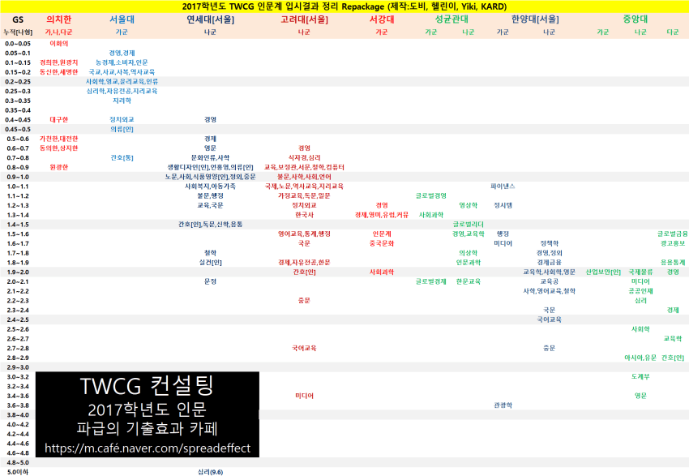
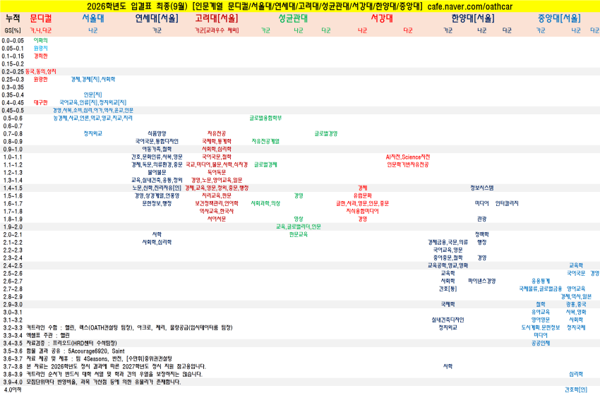
하지만 말그대로 보이는 백분위가 달라진것일뿐 문과생들끼리만 등수를 쭉세운다면 아직도 비슷하다 물론 수험생이 줄어서 약간 낮아지긴 했지만 연고대기준 17학번은 상위 0.5~1.5% 26학번은 상위 0.7~1.7% 사이에 대부분 학과가 들어온다
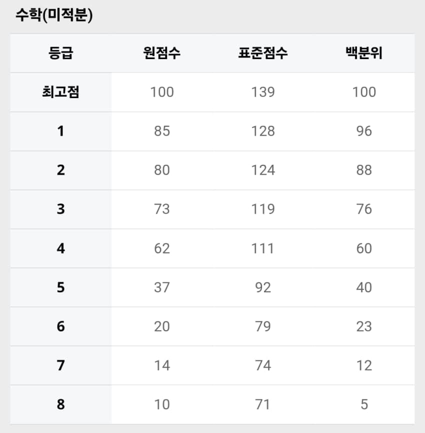
또한 정시비율이 적다보니 정시로 대학을 들어간 사람도 소수고, 대부분 사람이 수능성적에 대한 감이 없는것도 한몫한다 대표적인게 수능점수를 '표준점수'가 아닌 '등급'으로 보는것이다
같은 1등급내에서라도 만점과 1등급 커트라인은 천지차이이다 일례로, 26수능수학 기준 만점과 1등급컷의 표준점수차이는 11점으로, 1등급컷과 3등급컷의 9점차이보다도 크다 1등급내에서의 차이가 1등급컷과 높은 4등급의 차이만큼 나는것이다
이를 가장 잘 보여주는 예시가 올해 초 이슈된 영어 5등급 서울대 수리과학부 합격자이다 이는 몇가지가 겹쳐서 가능한 사례로,
1. 수학이 만점이고 국어가 99인점
2. 서울대는 영어반영이 극도로 낮고, 과탐2응시자에게 가산점을 주는점
3. 그 해 서울대 수리과학부 펑크가 나며 예년보다 합격선이 10점이상 떨어진점
이 겹쳐 가능했다 해당 합격자의 서울대식 환산점수는 398.4점이다 이해를 돕기위해 예시를 들자면 동일년도 국수영화학1생물1 올1등급컷 수험생의 서울대식 환산점수는 393.8점이고 농대, 문과를 포함한 서울대 모든과에 불합격한다 11542 성적표가 11111 성적표보다 4.6점이나 높은 것이다
물론 그럼에도 서울대 수리과학부를 붙기에는 부족한 점수지만 펑크로인해 전년대비 합격선이 10점이상 떨어지며 운도 약간 따라줬기에 가능한 케이스이다
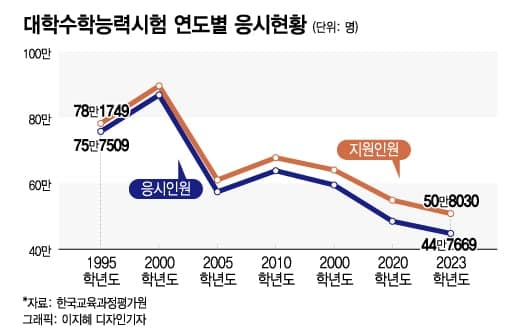
물론 갈수록 수험생이 줄어들며 당연하게도 대학은 가기 쉬워진다 그러나 아직도 수험생수는 50만근처를 유지중이고, 본인이 20년도 더 전에 입시를 치룬 송장세대가 아니라면 20% 수준의 차이이다 결국 큰 차이는 안난다는것...
댓글
수집 당시 댓글 571개
· ㅇㅇ · 11.24 17:18:35
· ㅇㅇ · 11.24 18:44:58
· ㅇㅇ · 11.24 21:16:18
ㅇㅇ · 11.24 08:52:42
ㅇㅇㅇㅇ · 11.24 08:55:45
ㅇㅇㅇㅇ · 11.24 08:55:53
· ㅇㅇ · 11.24 21:35:11
ㅇㅇ · 11.24 08:57:41
달봄 · 11.24 09:34:11
· ㅇㅇ · 11.24 21:52:23
ㅇㅇ · 11.24 09:35:09
ㅇㅇ · 11.24 09:35:33
ㅇㅇ · 11.24 09:58:13
Air친구 · 11.24 10:18:43
학력=직업이 아님
PP사비 · 11.24 10:52:24
ㅇㅇ · 11.24 11:39:03
FL · 11.24 11:59:30
· ㅇㅇ · 11.24 17:32:30
코코넛 · 11.24 12:01:14
ㅇㅇ · 11.24 12:02:10
ㅇㅇ · 11.24 12:03:22
· ㅇㅇ · 11.24 12:04:42
ㅇㅇ · 11.24 12:09:25
ㅇㅇ · 11.24 12:29:43
ㅇㅇ · 11.24 12:34:07
ㅇㅇ · 11.24 13:02:57
ㅇㅇ · 11.24 14:07:14
ㅇㅇ · 11.24 14:25:00
ㅇㅇ · 11.24 14:27:00
ㅇㅇ · 11.24 14:43:13
· ㅇㅇ · 11.24 20:34:19
· ㅇㅇ · 11.24 21:24:48
ㅇㅇ · 11.24 14:49:39
· ㅇㅇ · 11.24 14:50:10
· ㅇㅇ · 11.24 15:55:03
ㅇㅇ · 11.24 15:00:38
흠돌 · 11.24 15:13:17
ㅇㅇ · 11.24 15:13:47
ㅇㅇ · 11.24 15:40:36
ㅇㅇ · 11.24 15:53:02
뭐야이거
불편한팩트 · 11.24 15:57:10
ㅇㅇ · 11.24 15:58:08
ㅇㅇ · 11.24 15:59:03
ㅇㅇ · 11.24 16:01:55
· ㅇㅇ · 11.24 16:44:10
· ㅇㅇ · 11.24 16:48:25
ㅇㅇ · 11.24 16:22:33
ㅇㅇ · 11.24 16:25:33
시끄러 · 11.24 16:26:33
· ㅇㅇ · 11.24 21:56:12
ㅇㅇ · 11.24 16:50:53
해석가 · 11.24 16:52:14
치카치카리오 · 11.24 17:02:43
· ㅇㅇ · 11.24 18:35:27
ㅇㅇ · 11.24 17:05:49
푸른반복 · 11.24 17:09:17
· ㅇㅇ · 11.24 18:53:10
ㅁㅁ · 11.24 17:10:31
ㅇㅇ · 11.24 17:14:25
hin · 11.24 17:14:55
ㅇㅇ · 11.24 17:15:43
· 푸른반복 · 11.24 17:19:31
· ㅇㅇ · 11.24 17:23:31
· ㅇㅇ · 11.24 17:41:49
· ㅇㅇ · 11.24 17:43:07
· ㅇㅇ · 11.24 17:46:32
· ㅇㅇ · 11.24 17:50:25
· ㅇㅇ · 11.24 17:54:29
· ㅇㅇ · 11.24 17:54:55
· ㅇㅇ · 11.24 17:57:02
· ㅇㅇ · 11.24 18:34:13
· ㅇㅇ · 11.24 20:26:31
ㅇㅇ · 11.24 17:20:46
00 · 11.24 17:30:51
· 00 · 11.24 17:31:15
ㅇㅇ · 11.24 17:31:21
ㅇㅇ · 11.24 17:39:56
· ㅇㅇ · 11.24 22:12:57
ㅇㅇ · 11.24 18:12:32
ㅇㅇ · 11.24 18:25:47
· ㅇㅇ · 11.24 20:30:46
ㅇㅇ · 11.24 18:46:31
아갤 · 11.24 18:58:05
ㅇㅇ · 11.24 19:11:25
ㅇㅇ · 11.24 19:15:02
ㅇㅇ · 11.24 19:24:44
ㅋㅋ · 11.24 19:50:03
ㅇㅇ · 11.24 20:09:22
ㅇㅇ · 11.24 20:19:14
ㅇㅇ · 11.24 20:27:55
ㅇㅇ · 11.24 20:40:00
· ㅇㅇ · 11.24 20:48:35
ㅇㅇ · 11.24 20:46:35
ㅇㅇ · 11.24 20:52:12
ㅇㅇ · 11.24 20:53:04
ㅇㅇ · 11.24 20:58:56
ㅇㅇ · 11.24 21:06:31
ㅇㅇ · 11.24 21:12:39
ㅇㅇ · 11.24 21:34:12
ㅇㅇ · 11.24 21:54:25
ㅇㅇ · 11.23 23:47:01
· ㅇㅇ · 11.24 00:03:20
벡마 · 11.23 23:49:03
· 슈피슈와 · 11.23 23:55:15
· ㅇㅇ · 11.23 23:59:40
ㅇㅇ · 11.23 23:52:16
ㅇㅇ · 11.23 23:57:39
· ㅇㅇ · 11.23 23:57:45
ㅇㅇ · 11.23 23:59:17
· ㅇㅇ · 11.24 00:02:18
· ㅇㅇ · 11.24 03:37:59
내일의코스피 · 11.23 23:59:32
ㅇㅇ · 11.24 00:01:27
ㅇㅇ · 11.24 00:02:11
ㅇㅇ · 11.24 00:02:16
· ㅇㅇ · 11.24 00:03:22
· ㅇㅇ · 11.24 00:04:10
· ㅇㅇ · 11.24 00:06:34
· ㅇㅇ · 11.24 00:17:25
· ㅇㅇ · 11.24 00:35:25
· ㅇㅇ · 11.24 00:41:47
· ㅇㅇ · 11.24 00:42:34
· ㅇㅇ · 11.24 00:45:07
· ㅇㅇ · 11.24 00:48:28
· ㅇㅇ · 11.24 02:04:49
· ㅇㅇ · 11.24 03:40:28
ㅇㅇ · 11.24 00:08:34
ㅇㅇ · 11.24 00:15:42
ㅇㅇ · 11.24 00:18:54
· ㅇㅇ · 11.24 15:17:17
삭제됨 · 11.24 00:19:14
· ㅇㅇ · 11.24 14:52:10
ㅇㅇ · 11.24 00:22:55
ㅇㅇ · 11.24 00:25:06
익..익 · 11.24 00:32:20
· ㅇㅇ · 11.24 01:32:06
· ㅇㅇ · 11.24 03:03:49
ㅇㅇ · 11.24 00:47:50
· ㅇㅇ · 11.24 00:48:01
· ㅇㅇ · 11.24 01:32:26
· ㅇㅇ · 11.24 03:00:36
· ㅇㅇ · 11.24 03:25:25
· ㅇㅇ · 11.24 04:24:40
ㅇㅇ · 11.24 00:59:21
ㅇㅇ · 11.24 01:01:55
· ㅇㅇ · 11.24 01:31:07
· ㅇㅇ · 11.24 03:25:43
· ㅇㅇ · 11.24 04:43:39
ㅇㅇ · 11.24 01:31:36
ㅇㅇ · 11.24 01:31:41
환란 전 교회 휴거 · 11.24 02:02:23
단풍 · 11.24 02:04:56
ㅇㅇ · 11.24 02:09:00
· ㅇㅇ · 11.24 02:12:41
ㅇㅇ · 11.24 02:10:52
ㅇㅇ · 11.24 02:12:30
ㅇㅇ · 11.24 02:13:26
ㅇㅇ · 11.24 02:17:49
ㅇㅇ · 11.24 02:19:32
· ㅇㅇ · 11.24 02:21:36
· ㅇㅇ · 11.24 03:26:50
ㅇㅇ · 11.24 02:44:16
ㅇㅇ · 11.24 02:44:46
ㅇㅇ · 11.24 02:47:16
· ㅇㅇ · 11.24 03:25:55
· ㅇㅇ · 11.24 03:28:15
ㅇㅇ · 11.24 02:55:24
ㅇㅇ · 11.24 02:55:41
ㅇㅇ · 11.24 02:59:01
· ㅇㅇ · 11.24 03:09:57
· ㅇㅇ · 11.24 03:27:48
ㅇㅇ · 11.24 03:01:20
· ㅇㅇ · 11.24 03:21:57
ㅇㅇ · 11.24 03:22:56
· ㅇㅇ · 11.24 03:27:02
ㅇㅇ · 11.24 04:15:16
· ㅇㅇ · 11.24 04:15:25
· ㅇㅇ · 11.24 07:20:59
· ㅇㅇ · 11.24 17:17:46
· ㅇㅇ · 11.24 20:08:06
ㅇㅇ · 11.24 04:34:26
ㅇㅇ · 11.24 04:35:22
ㅇㅇ · 11.24 05:01:16
ㅇㅇ · 11.24 05:04:08
ㅇㅇ · 11.24 05:46:44
ㅇㅇ · 11.24 05:57:04
· ㅇㅇ · 11.24 05:58:12
ㅇㅇ · 11.24 06:45:49
Lee.2 · 11.24 07:00:21
dd · 11.24 07:05:51
ㅇㅇ · 11.24 07:23:49
ㅇㅇ · 11.24 07:30:44
· ㅇㅇ · 11.24 17:20:21
· ㅇㅇ · 11.24 18:44:03
· ㅇㅇ · 11.24 20:33:17
ㅇㅇ · 11.24 07:46:35
· 신용하 · 11.24 21:24:51
ㅇㅇ · 11.24 07:51:38
ㅇㅇ · 11.24 08:05:03
ㅇㅇ · 11.24 08:22:57
· ㅇㅇ · 11.23 23:54:22
ㅇㅇ · 11.23 22:44:28
· 흠... · 11.23 22:46:07
· ㅇㅇ · 11.23 22:46:46
· ㅇㅇ · 11.23 22:48:28
ㅇㅇ · 11.23 22:46:14
· ㅇㅇ · 11.23 22:46:18
· ㅇㅇ · 11.23 22:46:21
· ㅇㅇ · 11.23 22:46:24
· ㅇㅇ · 11.23 22:46:41
· ㅇㅇ · 11.23 22:46:48
· ㅇㅇ · 11.23 22:46:50
· ㅇㅇ · 11.23 22:46:53
· ㅇㅇ · 11.23 22:46:55
· ㅇㅇ · 11.23 22:46:58
· ㅇㅇ · 11.23 22:47:00
· ㅇㅇ · 11.23 22:47:02
· fancyha0102 · 11.23 23:42:12
· ㅇㅇ · 11.24 00:49:28
코마리 · 11.23 22:47:50
ㅇㅇ · 11.23 22:48:03
ㅇㅇ · 11.23 22:49:27
ㅇㅇ · 11.23 22:49:56
ㅇㅇ · 11.23 22:50:19
ㅇㅇ · 11.23 22:54:47
ㅇㅇ · 11.23 22:54:57
ㅇㅇ · 11.23 22:54:56
ㅇㅇ · 11.23 22:58:49
ㅇㅇ · 11.23 22:59:30
· ㅇㅇ · 11.23 23:32:14
· ㅇㅇ · 11.23 23:32:28
ㅇㅇ · 11.23 23:00:12
· ㅇㅇ · 11.23 23:01:12
· ㅇㅇ · 11.23 23:01:35
· ㅇㅇ · 11.23 23:02:16
· ㅇㅇ · 11.23 23:26:11
· ㅇㅇ · 11.23 23:27:39
· ㅇㅇ · 11.23 23:28:13
· ㅇㅇ · 11.23 23:29:03
· ㅇㅇ · 11.23 23:31:50
· ㅇㅇ · 11.23 23:50:03
· ㅇㅇ · 11.23 23:57:22
· ㅇㅇ · 11.23 23:59:19
· ㅇㅇ · 11.24 00:02:04
· ㅇㅇ · 11.24 00:05:32
· ㅇㅇ · 11.24 00:09:04
· ㅇㅇ · 11.24 00:10:56
· ㅇㅇ · 11.24 00:11:52
· ㅇㅇ · 11.24 00:35:40
해석가 · 11.23 23:00:45
ㅇㅇ · 11.23 23:03:43
· 벡마 · 11.23 23:49:13
· ㅇㅇ · 11.23 23:53:09
ㅇㅇ · 11.23 23:04:19
ㅇㅇ · 11.23 23:04:43
ㅇㅇ · 11.23 23:07:06
ㅇㅇ · 11.23 23:09:16
· ㅇㅇ · 11.23 23:57:11
· ㅇㅇ · 11.24 00:30:30
· ㅇㅇ · 11.24 03:30:13
ㅇㅇ · 11.23 23:09:42
ㅇㅇ · 11.23 23:13:21
ㅇㅇ · 11.23 23:14:51
돌아온애우 · 11.23 23:17:18
· 돌아온애우 · 11.23 23:17:46
· 돌아온애우 · 11.23 23:18:03
· ㅇㅇ · 11.23 23:31:38
ㅇㅇ · 11.23 23:17:40
ㅇㅇ · 11.23 23:18:23
· ㅇㅇ · 11.24 03:32:58
· ㅇㅇ · 11.24 17:36:11
ㅇㅇ · 11.23 23:24:23
ㅇㅇ · 11.23 23:28:42
ㅇㅇ · 11.23 23:30:54
· ㅇㅇ · 11.23 23:53:54
· ㅇㅇ · 11.23 23:55:12
· ㅇㅇ · 11.23 23:56:59
· ㅇㅇ · 11.24 00:23:30
· ㅇㅇ · 11.24 21:58:08
ㅇㅇ · 11.23 23:31:54
· ㅇㅇ · 11.24 00:39:34
· ㅇㅇ · 11.24 03:33:46
· ㅇㅇ · 11.24 09:05:53
ㅇㅇ · 11.23 23:33:07
· ㅇㅇ · 11.23 23:34:35
· ㅇㅇ · 11.23 23:38:32
· ㅇㅇ · 11.23 23:41:23
ㅇㅇ · 11.23 23:35:53
· ㅇㅇ · 11.24 00:32:07
· ㅇㅇ · 11.24 00:34:27
· ㅇㅇ · 11.24 00:35:16
· ㅇㅇ · 11.24 03:35:02
ㅇㅇ · 11.23 23:44:05
· ㅇㅇ · 11.23 23:45:57
fancyha0102 · 11.23 23:46:36
· fancyha0102 · 11.23 23:48:20
· 벡마 · 11.23 23:49:32
· fancyha0102 · 11.23 23:50:19
· ㅇㅇ · 11.24 03:37:19
· fancyha0102 · 11.24 04:19:02
· ㅇㅇ · 11.22 23:57:09
ㅇㅇ · 11.22 23:52:55
ㅇㅇ · 11.23 00:19:59
ㅇㅇ · 11.23 00:27:49
매개완 · 11.23 00:43:09
ㅇㅇ · 11.23 00:53:04
ㅇㅇ · 11.23 01:07:56
· ㅇㅇ · 11.23 22:44:50
ㅇㅇ · 11.23 06:43:27
· ㅇㅇ · 11.23 22:50:28
ㅇㅇ · 11.23 09:23:03
· ㅇㅇ · 11.23 22:54:18
ㅇㅇ · 11.23 11:51:27
· ㅇㅇ · 11.23 12:28:29
· ㅇㅇ · 11.23 12:44:47
암타황제강시현 · 11.23 22:25:22
· 2456778 · 11.23 22:37:59
봇치쟝 · 11.23 22:25:40
ㅇㅇ · 11.23 22:26:13
Enter · 11.23 22:26:58
ㅇㅇ · 11.23 22:27:41
ㅇㅇ · 11.23 22:27:46
ㅇㅇ · 11.23 22:27:49
ㅇㅇ · 11.23 22:27:50
ㅇㅇ · 11.23 22:28:02
ㅇㅇ · 11.23 22:28:14
ㅇㅇ · 11.23 22:28:25
ㅇㅇ · 11.23 22:29:22
ㅇㅇ · 11.23 22:29:39
ㅇㅇ · 11.23 22:29:54
· ㅇㅇ · 11.23 22:31:23
증거를친일천주새끼들 · 11.23 22:30:02
ㅇㅇ · 11.23 22:30:29
· ㅇㅇ · 11.23 22:32:00
· ㅇㅇ · 11.23 22:32:14
ㅇㅇ · 11.23 22:31:01
ㅇㅊㅌ · 11.23 22:31:16
헬스하는놈 · 11.23 22:31:32
ㅇㅇ · 11.23 22:31:43
· ㅇㅇ · 11.23 22:37:10
· ㅇㅇ · 11.23 22:37:37
· ㅇㅇ · 11.23 22:38:58
· ㅇㅇ · 11.23 22:41:48
· ㅇㅇ · 11.23 22:45:32
· ㅇㅇ · 11.23 23:13:15
· ㅇㅇ · 11.23 23:28:49
· ㅇㅇ · 11.24 00:25:01
ㅇㅇ · 11.23 22:31:53
ㅇㅇ · 11.23 22:32:25
ㅇㅇ · 11.23 22:33:06
· ㅇㅇ · 11.23 22:34:44
ㅇㅇ · 11.23 22:33:09
증거를친일천주새끼들 · 11.23 22:33:22
ㅇㅇ · 11.23 22:33:36
· ㅇㅇ · 11.23 22:34:37
· ㅇㅇ · 11.23 22:35:30
· ㅇㅇ · 11.24 03:42:21
ㅇㅇ · 11.23 22:33:46
ㅇㅇ · 11.23 22:34:12
· ㅇㅇ · 11.23 22:35:03
· ㅇㅇ · 11.23 22:38:03
· ㅇㅇ · 11.23 23:38:16
· ㅇㅇ · 11.24 03:44:20
ㅇㅇ · 11.23 22:34:44
흠... · 11.23 22:35:59
· ㅇㅇ · 11.23 22:36:30
· ㅇㅇ · 11.23 22:39:51
· ㅇㅇ · 11.24 03:44:48
7times · 11.23 22:37:18
· 2456778 · 11.23 22:39:21
· 암타황제강시현 · 11.23 22:39:33
ㅇㅇ · 11.23 22:37:23
ㅇㅇ · 11.23 22:37:55
· ㅇㅇ · 11.23 22:38:47
ㅇㅇ · 11.23 22:37:57
· ㅇㅇ · 11.23 23:27:53
삭제됨 · 11.23 22:38:26
· ㅇㅇ · 11.23 22:42:05
ㅇㅇ · 11.23 22:38:59
2456778 · 11.23 22:39:05
· 암타황제강시현 · 11.23 22:39:39
ㅇㅇㅇㅇ · 11.23 22:39:17
ㅇㅇ · 11.23 22:39:33
· ㅇㅇ · 11.23 22:42:40
ㅇㅇ · 11.23 22:39:39
· ㅇㅇ · 11.23 22:39:58
· fancyha0102 · 11.23 23:41:06
삼대남
검거
ㅇㅇ · 11.23 22:40:20
· ㅇㅇ · 11.23 22:44:49
ㅇㅇ · 11.23 22:40:27
· ㅇㅇ · 11.23 22:40:54
· ㅇㅇ · 11.23 22:41:20
· ㅇㅇ · 11.23 23:05:24
· ㅇㅇ · 11.23 23:06:25
ㅇㅇ · 11.23 22:42:28
ㅇㅇ · 11.23 22:42:48
· ㅇㅇ · 11.23 22:47:53
ㅇㅇ · 11.23 22:43:54
· ㅇㅇ · 11.23 22:49:43
ㅇㅇ · 11.23 22:44:19
· ㅇㅇ · 11.22 23:47:22
· ㅇㅇ · 11.22 23:47:33
· ㅇㅇ · 11.22 23:47:58
· ㅇㅇ · 11.22 23:49:18
· ㅇㅇ · 11.22 23:49:39
· ㅇㅇ · 11.22 23:50:35
· ㅇㅇ · 11.22 23:50:47
· ㅇㅇ · 11.22 23:51:04
· ㅇㅇ · 11.22 23:51:17
· ㅇㅇ · 11.22 23:51:53
· ㅇㅇ · 11.22 23:52:06
· ㅇㅇ · 11.22 23:52:42
· ㅇㅇ · 11.22 23:53:19
· ㅇㅇ · 11.22 23:53:59
· ㅇㅇ · 11.22 23:54:47
· ㅇㅇ · 11.22 23:55:06
· ㅇㅇ · 11.22 23:55:11
· ㅇㅇ · 11.22 23:55:46
· ㅇㅇ · 11.22 23:55:51
· ㅇㅇ · 11.22 23:57:13
· ㅇㅇ · 11.22 23:57:14
· ㅇㅇ · 11.22 23:58:20
· ㅇㅇ · 11.22 23:58:45
· ㅇㅇ · 11.23 00:02:08
· ㅇㅇ · 11.23 00:03:18
· ㅇㅇ · 11.23 00:07:21
· ㅇㅇ · 11.23 00:09:12
· ㅇㅇ · 11.23 00:15:53
· ㅇㅇ · 11.23 00:17:19
· ㅇㅇ · 11.23 00:17:45
· ㅇㅇ · 11.23 00:18:23
· ㅇㅇ · 11.23 00:18:53
· ㅇㅇ · 11.23 00:19:19
· ㅇㅇ · 11.23 00:20:01
· ㅇㅇ · 11.23 00:20:22
· ㅇㅇ · 11.23 00:21:18
· ㅇㅇ · 11.23 00:24:37
· ㅇㅇ · 11.23 00:26:56
· ㅇㅇ · 11.23 00:27:21
· ㅇㅇ · 11.23 00:28:24
· ㅇㅇ · 11.23 00:30:04
· ㅇㅇ · 11.23 00:31:13
· ㅇㅇ · 11.23 00:31:56
· ㅇㅇ · 11.23 00:32:05
· ㅇㅇ · 11.23 00:32:46
· ㅇㅇ · 11.23 00:34:21
· ㅇㅇ · 11.23 00:34:27
· ㅇㅇ · 11.23 00:37:39
· ㅇㅇ · 11.23 00:39:26
· ㅇㅇ · 11.23 00:40:47
· ㅇㅇ · 11.23 00:42:57
· ㅇㅇ · 11.23 00:45:16
· ㅇㅇ · 11.23 00:45:47
· ㅇㅇ · 11.23 00:47:00
· ㅇㅇ · 11.23 00:47:41
· ㅇㅇ · 11.23 00:48:35
· ㅇㅇ · 11.23 00:49:00
· ㅇㅇ · 11.23 00:54:54
· ㅇㅇ · 11.23 11:17:52
· dd · 11.24 07:06:45
· ㅇㅇ · 11.24 21:46:23
ㅇㅇ · 11.22 22:56:12
ㅇㅇ · 11.22 22:59:40
· ㅇㅇ · 11.22 23:05:39
· ㅇㅇ · 11.23 03:17:03
· ㅇㅇ · 11.23 03:49:34
· ㅇㅇ · 11.23 22:29:57
· ㅇㅇ · 11.23 22:39:44
ㅇㅇ · 11.22 22:59:45
· ㅇㅇ · 11.22 23:06:17
· ㅇㅇ · 11.23 22:29:18
ㅇㅇ · 11.22 23:01:29
ㅇㅇ · 11.22 23:01:32
ㅇㅇ · 11.22 23:03:15
ㅇㅇ · 11.22 23:07:54
ㅇㅇ · 11.22 23:08:46
ㅇㅇ · 11.22 23:09:38
유재희 · 11.22 23:09:46
· ㅇㅇ · 11.23 22:31:29
ㅇㅇ · 11.22 23:10:26
· Enter · 11.23 22:28:51
ㅇㅇ · 11.22 23:16:06
· ㅇㅇ · 11.22 23:42:59
· ㅇㅇ · 11.22 23:56:09
Yooniverse · 11.22 23:21:14
ㅇㅇ · 11.22 23:21:27
ㅇㅇ · 11.22 23:21:43
ㅇㅇ · 11.22 23:31:13
· ㅇㅇ · 11.22 23:46:57
· ㅇㅇ · 11.22 23:52:27
· ㅇㅇ · 11.23 00:31:59
ㅇㅇ · 11.22 23:46:03
ㅇㅇ · 11.22 23:50:07
· ㅇㅇ · 11.22 23:52:32
· ㅇㅇ · 11.23 09:19:29
· ㅇㅇ · 11.23 12:27:17
· ㅇㅇ · 11.23 22:42:13
둥실라이드 · 11.22 23:52:23
ㅇㅇ · 11.22 23:52:44
· ㅇㅇ · 11.22 23:55:32
ㅇㅇ · 11.22 22:20:18
ㅇㅇ · 11.22 22:20:49
· ㅇㅇ · 11.22 22:27:55
· ㅇㅇ · 11.22 22:28:59
백석행 · 11.22 22:21:05
곽봉근_파주부사관(고졸이라도잘삽니다) · 11.22 22:24:57
ㅇㅇ · 11.22 22:25:24
ㅇㅇ · 11.22 22:27:39
· ㅇㅇ · 11.22 22:29:42
· ㅇㅇ · 11.22 22:30:39
· ㅇㅇ · 11.22 22:30:46
· 모순 · 11.22 22:31:34
· ㅇㅇ · 11.22 22:32:15
· 모순 · 11.22 22:32:31
· ㅇㅇ · 11.22 22:33:15
· ㅇㅇ · 11.22 22:56:10
· ㅇㅇ · 11.22 22:57:22
· ㅇㅇ · 11.22 22:59:26
· ㅇㅇ · 11.22 23:06:58
· ㅇㅇ · 11.22 23:10:41
· ㅇㅇ · 11.22 23:11:47
· ㅇㅇ · 11.22 23:14:43
· ㅇㅇ · 11.22 23:15:40
· ㅇㅇ · 11.22 23:17:24
· ㅇㅇ · 11.22 23:18:40
· ㅇㅇ · 11.22 23:19:27
· ㅇㅇ · 11.22 23:19:44
· ㅇㅇ · 11.22 23:21:08
· ㅇㅇ · 11.22 23:21:11
· ㅇㅇ · 11.22 23:21:46
· ㅇㅇ · 11.22 23:22:13
· ㅇㅇ · 11.22 23:22:27
· ㅇㅇ · 11.22 23:23:08
· ㅇㅇ · 11.22 23:23:45
· ㅇㅇ · 11.22 23:25:14
· ㅇㅇ · 11.22 23:26:52
· ㅇㅇ · 11.22 23:27:18
· ㅇㅇ · 11.22 23:28:21
· ㅇㅇ · 11.22 23:29:58
· ㅇㅇ · 11.22 23:30:41
· ㅇㅇ · 11.22 23:31:44
· ㅇㅇ · 11.22 23:32:38
· ㅇㅇ · 11.22 23:34:28
· ㅇㅇ · 11.22 23:34:38
· ㅇㅇ · 11.22 23:35:44
· ㅇㅇ · 11.22 23:35:56
· ㅇㅇ · 11.22 23:36:17
· ㅇㅇ · 11.22 23:36:37
· ㅇㅇ · 11.22 23:37:57
· ㅇㅇ · 11.22 23:38:34
· ㅇㅇ · 11.22 23:39:00
· ㅇㅇ · 11.22 23:39:59
· ㅇㅇ · 11.22 23:40:28
· ㅇㅇ · 11.22 23:41:30
· ㅇㅇ · 11.22 23:41:41
· ㅇㅇ · 11.22 23:41:51
· ㅇㅇ · 11.22 23:42:42
· ㅇㅇ · 11.22 23:42:55
· ㅇㅇ · 11.22 23:43:10
· ㅇㅇ · 11.22 23:43:13
· ㅇㅇ · 11.22 23:43:21
· ㅇㅇ · 11.22 23:43:22
· ㅇㅇ · 11.22 23:43:57
· ㅇㅇ · 11.22 23:43:58
· ㅇㅇ · 11.22 23:44:23
· ㅇㅇ · 11.22 23:45:27
· ㅇㅇ · 11.22 23:45:43
· ㅇㅇ · 11.22 23:46:14
· ㅇㅇ · 11.22 23:46:17
· ㅇㅇ · 11.22 23:46:50
· ㅇㅇ · 11.22 23:47:01